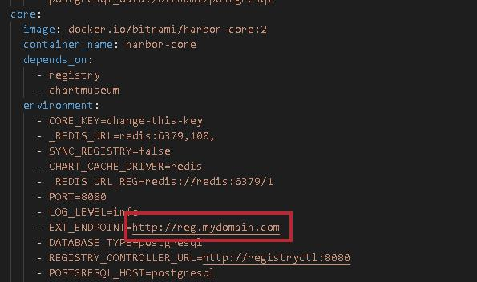
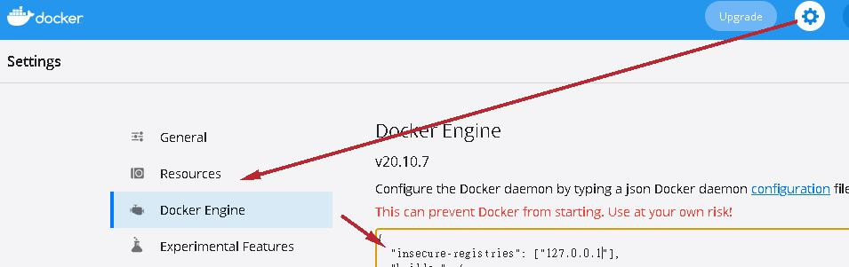

docker registry
- docker hub提供了images的存放位置，但有些自行開發的項目不想暴露在外，或是擔心docker hub在維護時無法使用也會很麻煩，可以善用docker registry來自建一個私有的docker倉庫
Harbor
- Harbor是VMWare用Go寫的docker registry，簡單的UI介面可以讓docker images維護更加便利
Bitnami
安裝
須確保有安裝docker跟docker-compose
Bitnami/Harbor安裝流程簡易，只需照著文黨執行即可
1 | $ curl -LO https://raw.githubusercontent.com/bitnami/bitnami-docker-harbor-portal/master/docker-compose.yml |
- 下載docker-compose後須調整service.core的參數EXT_ENDPOINT配置，原先提供的”reg.mydomain.com”只是範例，需調整成機器可以拜訪的目標IP或是Domain，留存測試時最新版的備份參考

執行完docker-compose up後拜訪UI介面預設帳密是admin/bitnami
- 2024/08/02更新
從2024-01-16開始，Harbor不在提供docker-compose.yaml，也不提供image bitnami/harbor-core:2跟bitnami/chartmuseum:0指定版本；備存yaml可以從這裡獲得；指定版本image可以從這裡取得，並透過下列指令匯入主機
1 | docker load --input xxxx.tar |
docker image打包上傳
修改請求端docker daemon設定，將harbor請求domain/ip加入白名單
linux: /etc/docker/daemon.json 添加參數insecure-registries
mac/windows: 至docker Desktop > 設定 > Docker Engine添加參數insecure-registries

登入harbor: docker login [host(ip)]，並輸入帳密
將要上傳的image給予tag: docker tag [來源image] [host(ip)/項目/鏡像名稱:鏡像版號]
執行push: docker push [host(ip)/項目/鏡像名稱:鏡像版號]